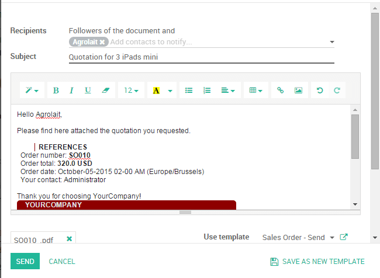

Обзор
Котировки - это документы, отправленные клиентам для расчета сметной стоимости определенного набора товаров или услуг. Клиент может принять котировку, и в этом случае продавцу придется выдать заказ на продажу или отказаться от него.
Например, моя компания продает электронные продукты, а мой клиент Agrolait проявил интерес к покупке `` 3 iPads`` для облегчения их операций. Я хотел бы отправить им предложение для этих iPad с продажной ценой «320 долларов США» от iPad со скидкой `` 5% [UNKNOWN NODE problematic].
В этом разделе будет показано, как действовать.
Настройка
Установите модуль управления продажами
Чтобы иметь возможность выпустить свою первую котировку, вам необходимо установить модуль ** Sales Management ** из модуля приложения в бэкэнде (в конце) Odoo.

Разрешение на скидки в строке заказа клиента
Разрешение скидок на котировки является обычной практикой продаж, чтобы улучшить шансы вложиться в перспективного клиента.
В нашем примере мы хотели предоставить `` Agrolait`` скидку `` 5% `` на цену продажи. Чтобы включить эту функцию, зайдите в приложение ** Sales [UNKNOWN NODE problematic], выберите: menuselection: «Конфигурация -> Настройки» и в разделе «Котировки и продажи» ** выберите галочку ** Разрешить скидки в строке заказа клиента ** (см. Рисунок ниже) и примените ваши изменения.

Создайте свою счет-фактуру
Чтобы создать свою первую счет-фактуру, нажмите на: menuselection: [UNKNOWN NODE title_reference] и нажмите кнопку ** Create [UNKNOWN NODE problematic]. Затем заполните свою зявку следующим образом:
Клиент и продукты
Основными элементами, добавляемыми в любую счет-фактуру, являются клиент (человек, которому вы отправите свою счет-фактуру) и продукты, которые вы хотите продать. В представленной котировке выберите изыскание из раскрывающегося списка ** Заказчик ** и в разделе ** Линии заказа [UNKNOWN NODE problematic], щелкните по ** Добавить элемент ** и выберите свой продукт. Не забудьте вручную добавить количество предметов под ** Упорядоченное количество ** и скидку, если это применимо.

Если у вас еще нет клиента или продукта, записанного в вашей среде Odoo, вы можете создать их на лету прямо из ваших котировок:
Чтобы добавить нового клиента, нажмите на раскрывающееся меню ** Клиент ** и нажмите «Создать и изменить» [UNKNOWN NODE problematic]. В этом новом окне вы сможете записывать все данные о клиенте, такие как адрес, веб-сайт, номер телефона и контакт.
Чтобы добавить новый продукт, под ** Строкой заказа [UNKNOWN NODE problematic], нажмите на добавление элемента и на ** Создать и Изменить ** из раскрывающегося списка. Вы сможете записывать информацию о своем продукте (тип продукта, стоимость, цену продажи, политику выставления счетов и т. Д.) Вместе с изображением.
налоги
Чтобы указать налоги, просто перейдите в раздел налогов в линейке продуктов и нажмите «Создать и изменить» [UNKNOWN NODE problematic]. Заполните детали (например, если вы подвержены «21%» по отношению к вашим продажам, просто заполните нужную сумму в процентах) и сохраните.
Условия и положения
Вы можете выбрать срок действия вашей котировки и добавить условия вашей компании непосредственно в вашу котировку (см. Рисунок ниже).
Предварительный просмотр и отправка счет-фактур
Если вы хотите увидеть, как выглядит ваша счет-фактура перед отправкой, нажмите кнопку ** Print ** (верхний левый угол). Он предоставит вам версию PDF для печати со всеми вашими данными о котировках.

Совет
Обновите данные своей компании (адрес, сайт, логотип и т. д.), Появляющиеся в вашей счет-фактуре из меню ** Настройки ** в коммутаторе приложений, и щелкните по ссылке: menuselection: «Настройки -> Общие настройки -> Настроить данные компании`.
Нажмите «Отправить по электронной почте [UNKNOWN NODE problematic]», чтобы автоматически отправлять электронное письмо своему клиенту со счет-фактурой в качестве приложения. Вы можете настроить каркас электронной почты перед отправкой и даже сохранить его в качестве шаблона, если хотите его повторно использовать.
См.также
: Документ: [UNKNOWN NODE title_reference]
: Документ: [UNKNOWN NODE title_reference]
: Документ: [UNKNOWN NODE title_reference]